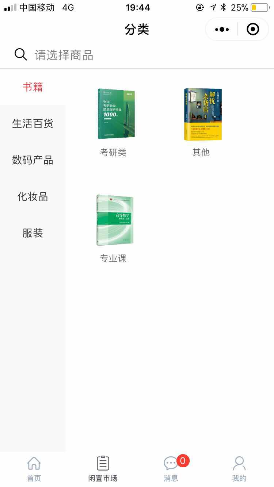
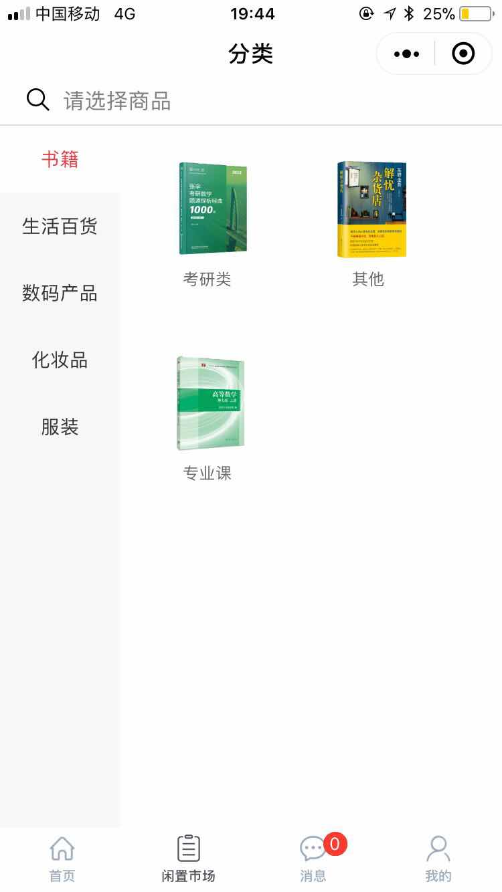

教育经历
石家庄铁道大学
相关技能
HTML，CSS，JS: 拥有像素级还原页面的能力，熟悉ES6语法
Vue: 熟练使用Vue全家桶成员
Node: 可以制作小工具，也可以进行简单的后端接口开发
SQL: 使用过MySQL、Mongodb、SqlServer，可以进行数据库设计
微信小程序: 熟悉微信小程序开发以及如何上线的整个流程
网络: 了解HTTP协议，了解与计算机网络相关的基础知识
算法: 可以编写基本的算法与数据结构
项目经历
1.SimpleUI组件库
项目介绍:该项目是参照ElementUI、Ant Design等UI组件库思路，实现的一个基于Vue的简易UI组件库，目前已支持按钮、输入框 、网格系统、布局、Toast、Tabs、Popover、手风琴组件、省市区级联选择器等组件。后续还将开发轮播、Nav、图片上传、Table、分页等组件。每个组件钧经历从需求分析到单元测试、使用TravisCI进行持续集成，最终以VuePress为基础制作官方文档，发布于npmjs.org。 完成项目使我对Vue的各种使用技巧更加熟练，同时也让我更加理解了前端工程化流程以及单元测试的重要性。
技术栈: Vuejs / VuePress / Scss / Parcel/ Mocha / ES6 / TravisCI
2.个人博客

项目介绍:个人博客全栈项目，记录技术、记录生活。前端使用Vue全家桶，包括博客前台页面和后台管理系统两部分。后端使用Express+Mongodb。部署到阿里云服务器上，Web服务器使用Nginx，图片存储在七牛云。第一次实现了从前端到后端独立开发、前后端分离开发。
技术栈: Vue全家桶 / Express / Mongodb / Nginx / 七牛云 / 阿里云 / 各种工具
3.CNode社区
项目介绍: 这是我的第一个Vue项目，该项目使用Vue重新编写CNode社区，项目利用CNode官方提供的API，以Vue-cli3.0创建项目模板，使用Axios请求获取数据，使用Vue Router进行前端路由的切换传参，Webpack进行打包。
技术栈: Vuejs / Vue cli3.0 / Axios / Vue-Router / Yarn
4.铁大助手
 

项目介绍:该项目本意为本校学生提供二手交易的途径，校园论坛提供一种学生交流的方式。最后小程序上线，经实验发掘这条路走不通。项目采用WeUI组件库，使用Bmob后端云，大大提高了开发效率。通过本项目对微信小程序及其生态有了很多的了解，并且走完上线一个论坛、商品类小程序的整个流程。
技术栈: 微信小程序 / Bmob后端云 / WeUI组件库